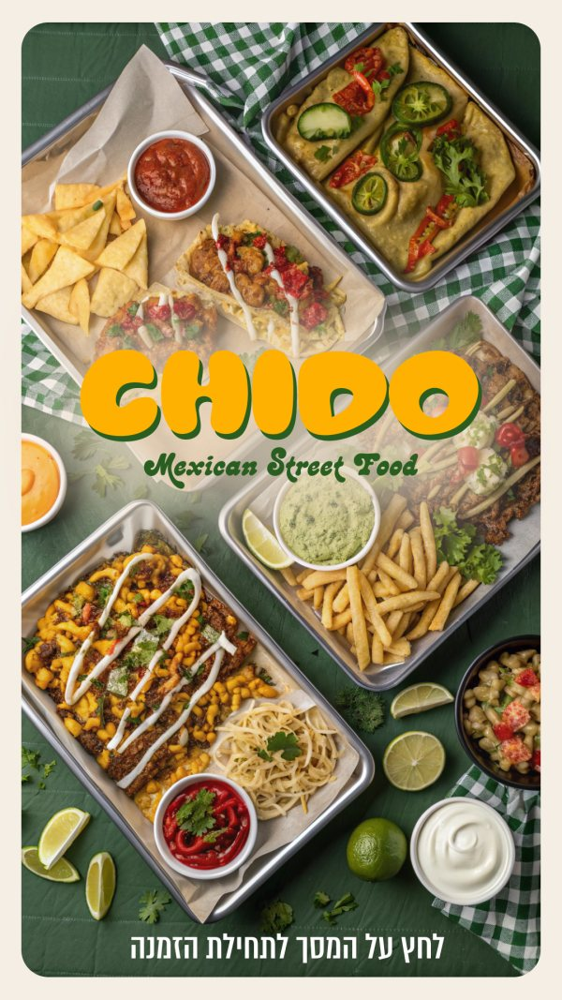
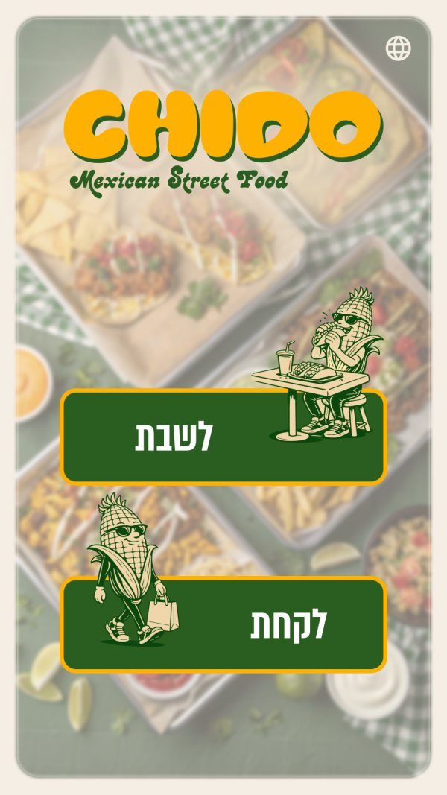
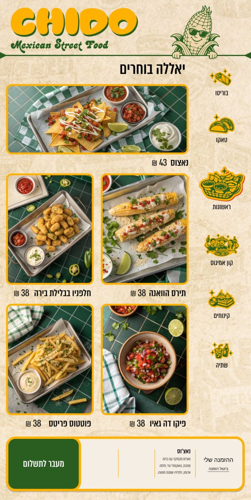
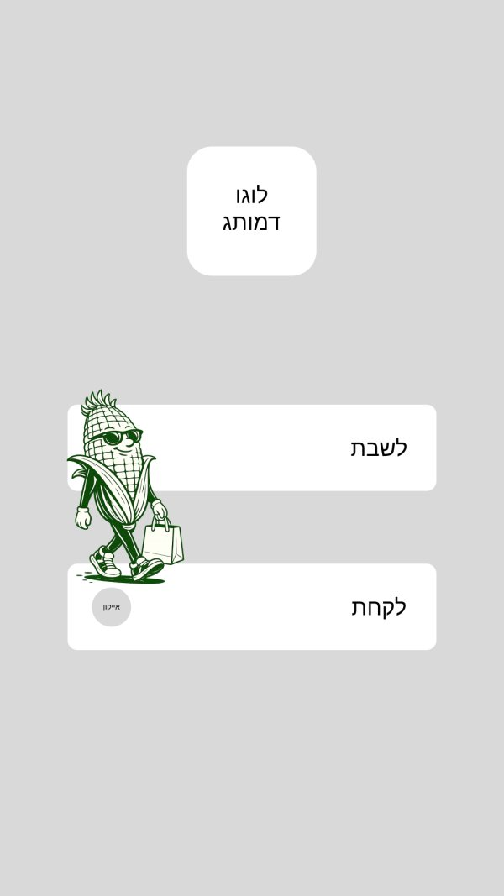
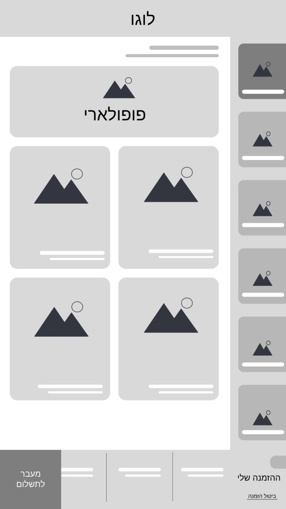
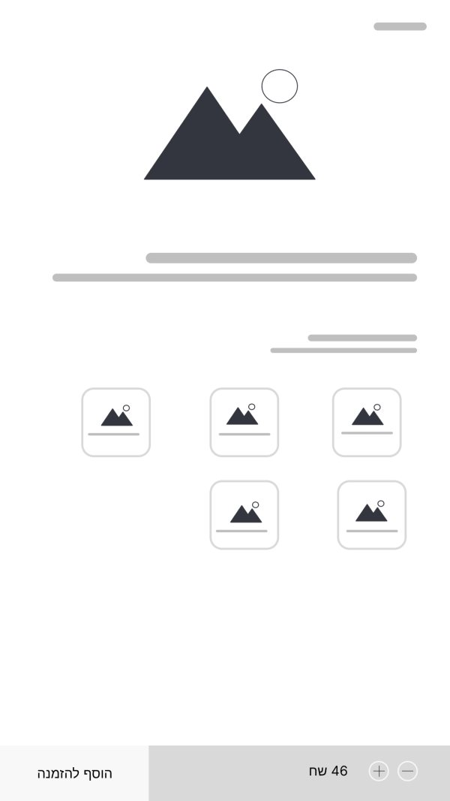
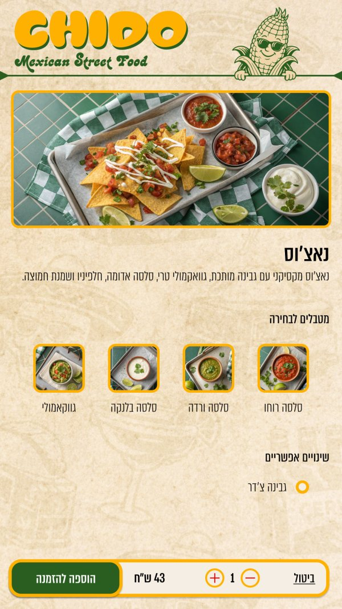
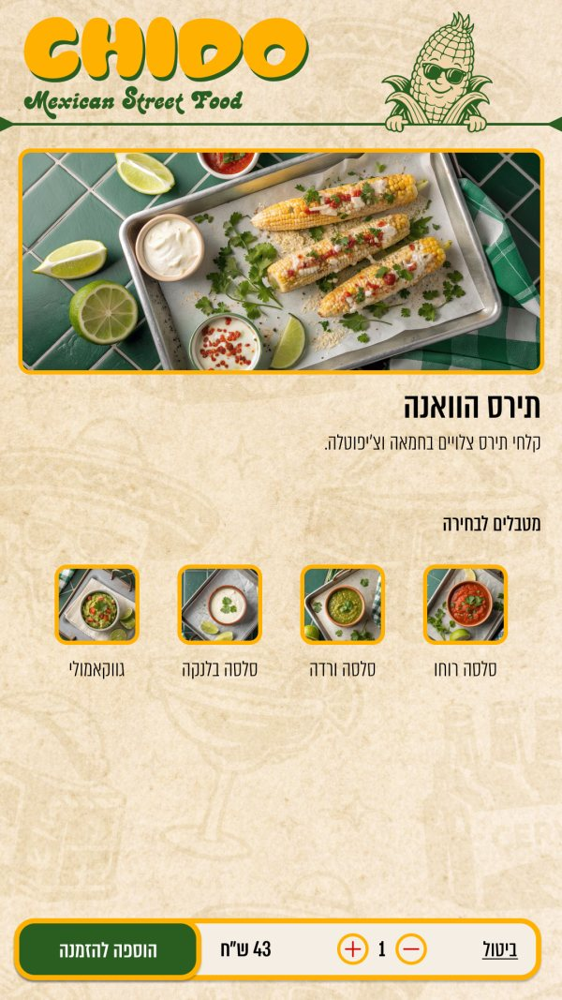
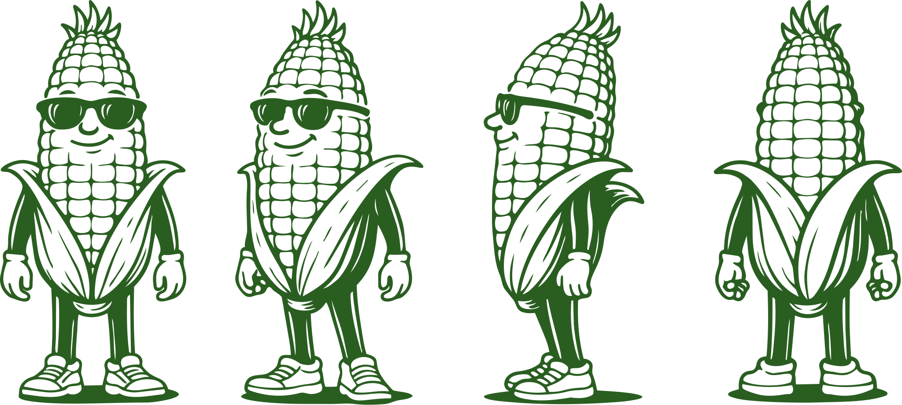
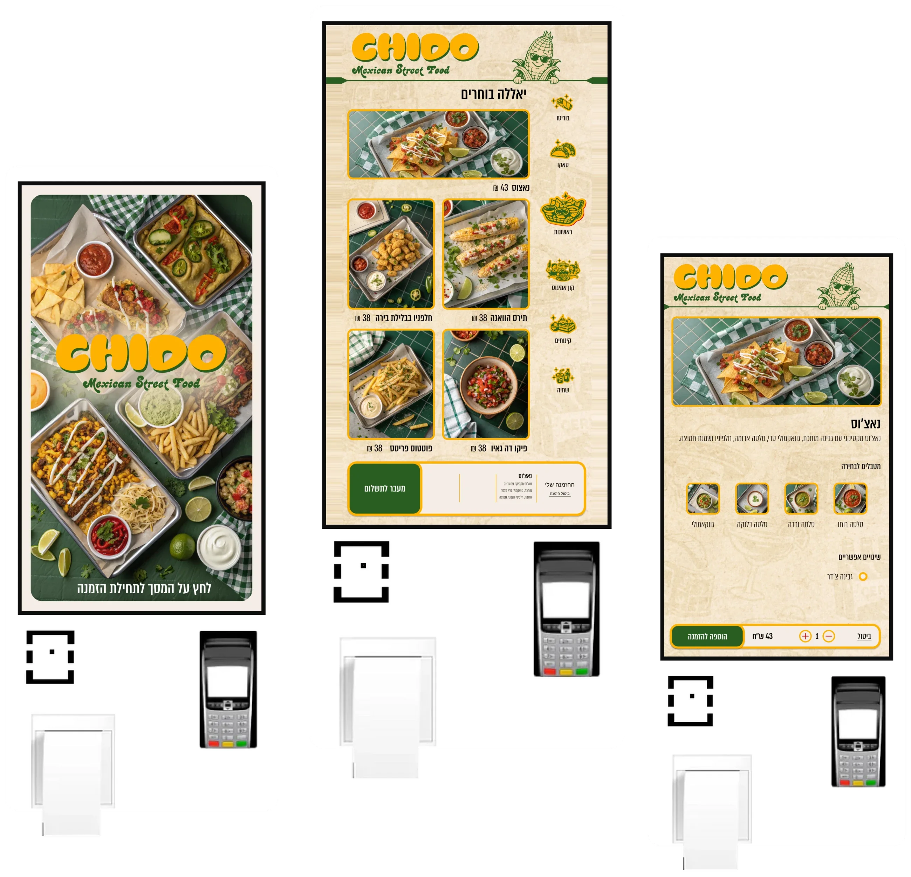

How I Designed a Self-Order Kiosk for CHIDO
CHIDO is a Mexican street food restaurant, and the kiosk is the first thing a hungry guest touches. I designed the full ordering flow for a portrait touchscreen (1080 × 1920): from the welcome screen, through dine in or take away, to browsing the menu and customizing a dish, all in Hebrew and right to left, and all in CHIDO's loud, sunny brand.
Problem
Ordering at a busy counter is slow, and a long menu with sauces and extras is easy to get wrong. A kiosk has to be understood in seconds by a first time guest, with no staff to explain it, while still feeling like the restaurant and not like a generic checkout machine.
Solution
A short, photo first flow: a full screen welcome, one big choice between dine in and take away, a menu built around appetizing food photography, and a dish page where sauces and extras are picked by tapping pictures instead of reading options.
Approach
I started from grayscale wireframes to settle the structure and the tap order, then dressed them in the brand: warm paper textures, yellow outlined photo frames, and a corn mascot who shows up at the moments a guest needs a friendly nudge.
Structure & Wireframes
Before any color or photography, I built the flow as low fidelity wireframes on the same 1080 × 1920 canvas. That kept the conversation about hierarchy: what a guest sees first, where the thumb goes next, and where the order always lives.
- One decision per screen: dine in or take away gets its own screen with two large buttons, so nothing competes for attention.
- A menu with a clear rhythm: one wide featured card on top, a two column grid below, and a category rail running down the side so a guest can jump between sections without going back.
- An order bar that never leaves: a persistent bar at the bottom holds the running order, a cancel link, and a single green button to pay.
- Dishes that ask small questions: sauces and extras sit under the dish photo as tappable picture tiles, with the quantity and the add to order button pinned at the bottom.



The Ordering Flow
The final screens keep the wireframe structure and add the brand on top. The flow reads in five steps, from a guest walking up to the kiosk to a dish in the order.
From Welcome to Dish


Design Decisions
- Food photography leads: every item is a large, yellow outlined photo with its name and price underneath, so a guest orders with their eyes first and reads second.
- Big, unmistakable buttons: dine in and take away are two full width green buttons with the mascot sitting at a table on one and walking off with a bag on the other, so the choice is understood even before the words are read.
- Right to left from the ground up: the layout, the category rail, prices and the order bar are all mirrored for Hebrew, while the English tagline stays in the brand's display type.
- Pictures instead of option lists: sauces are picked from small photo tiles, and extras like cheddar are a single tap, so customizing a dish never becomes a form.
- A language switch within reach: a small globe sits in the corner of the entry screens for guests who prefer another language.
- The total is always visible: the order bar and the dish page bar keep price, quantity and the next action in the same place on every screen.
Brand & Visual Identity
The identity is retro and playful: a chunky, rounded wordmark in sunshine yellow with a deep green shadow, a script tagline, and a corn mascot in sunglasses who appears in several poses across the interface. Warm paper texture sits behind the menu, and the food photography leans on green tile and gingham cloth, so the screens feel like a street food counter and not a template.

On the Kiosk
To check how the flow feels at real size, I placed the screens on freestanding ordering kiosks: a tall portrait display, with the card reader and receipt printer underneath. Side by side, the welcome, menu, and dish screens read as one continuous flow.

What I took away
A kiosk is a first impression, not a form: the same order can feel like a chore or like the start of a meal, and the brand, the photography, and the mascot are what set the tone.
Design for the thumb and the queue: big targets, one decision at a time, and a total that never disappears keep the flow fast for someone standing up with people waiting behind them.
Wireframes earn their keep: settling the structure in grayscale first let the brand and the photography go on top without reopening the layout.
Thanks for reading!